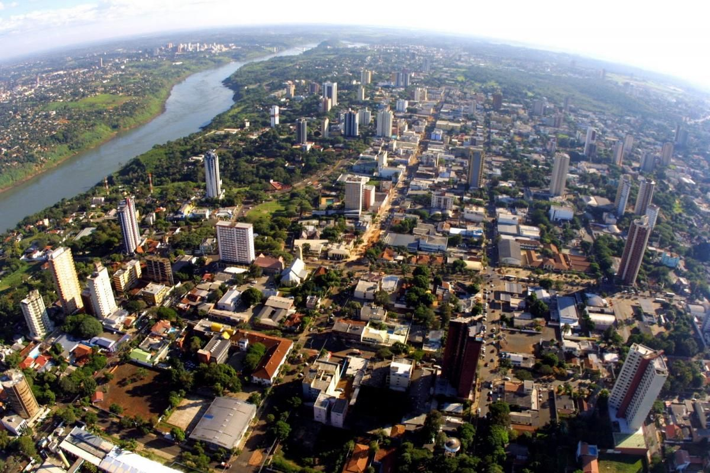

La ciudad
Foz do Iguaçu es la ciudad con la mayor población de frontera de Brasil, con 256.088 habitantes, según el Censo del IBGE de 2010. Su PIB es de R$ 6,7 mil millones y el PIB per capita, de R$ 20.613,46. Su coeficiente de Gini, que mide la desigualad en la distribución de renta, es de 0,45, resultado mejor que el promedio nacional (0,56) y del Estado de Paraná (0,49).
Ubicación
Tiene una ubicación privilegiada, pues está en la tríplice frontera de Brasil con Argentina y Paraguay, en el centro geográfico del Mercosur. Por la posición estratégica que ocupa, lidera una nueva metrópolis regional. En un radio de 170 kilómetros a partir de Foz do Iguaçu, incluyendo los tres países, hoy viven aproximadamente 2 millones de habitantes.De estos, 1 millón y 200 mil viviendo en la región Oeste de Paraná. De esta manera, se consolida como un importante destino emisor de turistas nacionales e internacionales.
Reconocimiento
Reconocida como un destino turístico internacional por abrigar una de las nuevas siete maravillas de la naturaleza, las Cataratas de Iguazú, y la planta hidroeléctrica más grande del mundo en generación de energía, Itaipu Binacional, la ciudad se destaca como el segundo destino en la preferencia de los turistas extranjeros que visitan Brasil, según una encuesta de Embratur. También es considerada una de las cinco ciudades brasileñas que más reciben turismo de eventos nacionales e internacionales, según la asociación Internacional de Congresos y Convenciones - ICCA.
Foz do Iguaçu está, además, en primer lugar entre las ciudades no capitales en el Estudio de Competitividad de los 65 Destinos Inductores del Desarrollo Turístico Regional, realizado por la Fundación Getúlio Vargas para el Ministerio de Turismo – Mtur.
Hoteleria
La ciudad cuenta con uno de los seis parques hoteleros más grandes de Brasil, con más de 23 mil acomodaciones.Y tiene, también, una de las mejores infraestructuras del país para la realización de eventos. Sus centros de convenciones son capaces de recibir, juntos, a 40mil personas, simultáneamente.
Internacional
Se estima que el Destino Iguazú, como es conocida nacional e internacionalmente, recibe, por año, a más de 5 millones de turistas, sumados los que visitan las Cataratas de Iguazú, por Brasil y Argentina, los que visitan la Itaipu Binacional y participan de eventos nacionales e internacionales, y los que se dirigen a la región para ir de compras en Ciudad del Este, en Paraguay. Las Cataratas de Iguazú reciben a 2,5 millones de turistas por año, por los lados brasileño y argentino del Parque Nacional de Iguazú. Itaipu Binacional recibe a más de 500 mil visitantes/año.Los eventos atraen a otros 300 mil visitantes.
Calendario
Con mucho medio espontáneo y un calendario fijo de eventos que proyectan una imagen positiva de la ciudad, Foz do Iguaçu viene convirtiéndose, en los últimos años, en un destino turístico de calidad para entretenimiento, eventos y ecoaventura.Aprovechando esta nueva imagen, surge un nuevo turismo de compras en Ciudad del Este, en Paraguay, enfocado en la clase media brasileña, y ya no en los populares “vendedores ambulantes”.
Cosmopolita
Ciudad cosmopolita, que abriga 72 etnias, Foz do Iguaçu también se está consolidando como polo de conocimiento y de nuevas tecnologías.Y asiste a una retomada de las inversiones públicas y privadas.La creación del Parque Tecnológico Itaipu (PTI) y de la Universidad Federal de la Integración Latinoamericana (UNILA), en Foz do Iguaçu, con proyecto arquitectónico firmado por Oscar Niemeyer, con previsión de atender a 10 mil alumnos brasileños y latinoamericanos, va a convertir la región en un polo de conocimiento y de actividades académicas.Por otro lado, la construcción del Linhão de 500 kV, conectando Itaipu a Asunción, va a permitir la instalación de grandes empresas electrointensivas, brasileñas y extranjeras, promoviendo el desarrollo industrial de la región del Alto Paraná hasta Asunción, en territorio paraguayo.
Vuelos
Con más de 24 vuelos diarios/regulares, el Aeropuerto Internacional de Foz do Iguaçu viene destacándose en los últimos años como uno de los aeropuertos que más crecen en Brasil. Recibió 1.690.310 arribos y desembarques de pasajeros en 2011, el crecimiento más alto del país.Y ahora quiere desarrollar su vocación internacional, constituyéndose en la puerta de entrada y salida de Brasil por la Costa Oeste, formando lo que se podría llamar de Hub de Mercosur y de los países Andinos.Con esto, el aeropuerto permitiría una rápida conexión a Estados Unidos, Centroamérica, China, India, Corea del Sur, Australia y Japón.
Consolidación
Esta consolidación es esencial para que la ciudad siga desarrollando la industria del turismo y se consolide como polo de conocimiento, prestación de servicios y de nuevas tecnologías.
- Alcaldía de Foz do Iguazú.